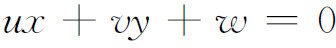
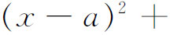
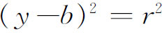

4．一些有关的基础工作
欧几里得几何公理的清晰的描述启发了相应的几门非欧几里得几何的研究。希尔伯特公理集的一个美妙的特点是，如果用罗巴切夫斯基-波尔约公理代替欧几里得平行公理，而其余公理保持不变，马上就可以得到双曲型非欧几里得几何的公理集。
为了得到单重的或双重的椭圆型几何，不仅必须抛弃欧几里得平行公理并吸收任意两条直线都有一个公共点（在单重椭圆型几何中）或者至少有一个公共点（在双重椭圆型几何中）的公理，而且还必须改变另外一些公理。在这些几何中，直线不是无限长的，而是具有圆的性质。因此必须用描述圆上点的序关系的序公理来代替欧几里得几何的序公理。几个这样的公理系统被作出来了。霍尔斯特德（George B．Halsted，1853—1922）在他的《有理几何》（Rational Geometry）中(16)，以及克兰（John R．Kline，1891—1955）(17)都建立了双重椭圆型几何的公理基础；海森伯格（Gerhard Hessenberg，1874—1925）(18)作出了单重椭圆型几何的公理体系。
另一类关于几何基础的研究是考虑否定或者只略去公理集中一条或几条公理所产生的后果。希尔伯特在他的独立性证明中亲自做了这项工作，因为这种证明的实质就是构造一个模型或者一种解释，使之满足除了要建立其独立性的那条公理以外的所有公理。否定一条公理的最有意思的一个例子当然就是否定平行公理，扔掉阿基米德公理可以产生饶有兴趣的结果，这条公理可以像希尔伯特公理系统中的Ⅴ1那样叙述。这样获得的几何称为非阿基米德几何；在这种几何中存在这样两条线段，其中一条的任何整数倍（不管这个数有多大）都不超过另外一条线段。韦罗内塞在《几何基础》中构造了这样一种几何。他还证明了这门几何中的定理可以任意接近欧几里得几何中的定理。
德恩（1878—1952）通过略去阿基米德公理也获得了许多有趣的定理(19)。例如，存在一种几何，在其中，存在着角之和等于两个直角，相似而不叠合的三角形，以及过一已知点可以画出无穷多条直线平行于一条已知直线。
希尔伯特指出，在建立平面上的面积理论时无需用到连续性公理（即Ⅴ2）。但是在空间的情况下，德恩证明(20)存在多面体，它们虽然不能分解成相互叠合的部分（即使在建立了叠合多面体的加法之后），但仍然有相同的体积。因此在三维的情况下，连续性公理是必需的。
有一些数学家采用一种完全不同的方式探讨欧几里得几何的基础。我们知道，几何曾经失宠，因为数学家们发现他们不自觉地在直观基础上采用了一些事实，因而他们信以为真的证明便是不完全的。这种还会继续出现的危险使他们确信，几何的唯一坚固的基础是算术。建立这样一个基础的途径当时是清楚的。事实上，希尔伯特就曾经给出了欧几里得几何的一个算术解释。现在什么是必须做的事情呢？譬如对于平面几何来说，并不是要把点解释为一个数对（x，y），而是要定义点就是一个数对，定义直线就是三个数之比（u∶v∶w），定义点（x，y）在直线（u，v，w）上当且仅当

成立，定义圆就是满足方程

的所有（x，y）的集合等。换句话说，就是必须把纯粹几何概念的解析几何等价物作为几何概念的定义，并用代数方法去证明定理。因为解析几何把欧几里得几何中的一切东西都以代数形式包含进去了，所以不存在能否获得算术基础的问题。事实上，涉及的技术性工作（甚至对于n维欧几里得几何）确实已经做过了，例如格拉斯曼在他的《扩张的计算》（Calculus of Extension）中就已经做过；而且他本人还提议把这项工作作为欧几里得几何的基础。